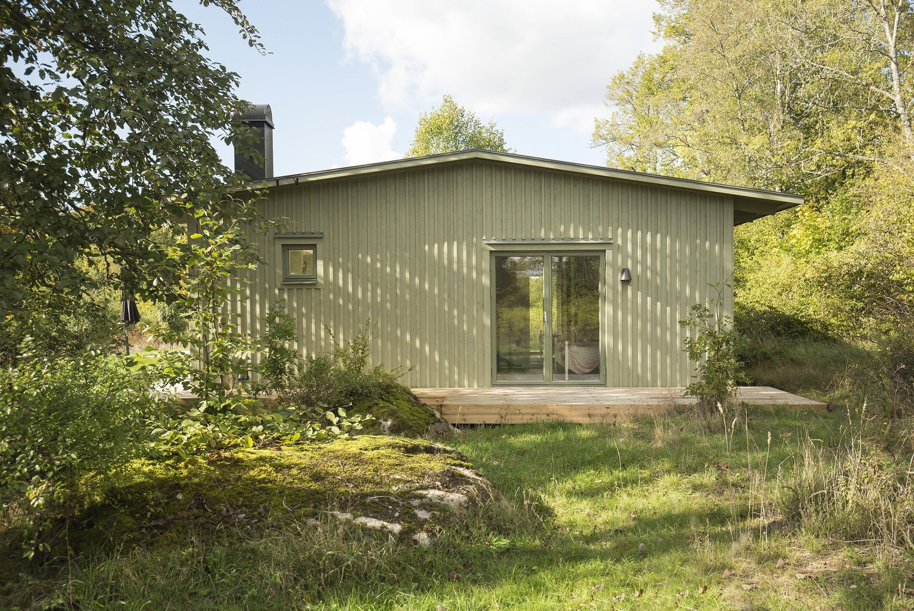

En tydlig idé.
Genom hela arbetet.
Arkitektur, planering och gestaltning. Vi hjälper dig att undersöka möjligheterna och utveckla dem till ett genomarbetat projekt.
Arkitektur med
platsen som utgångspunkt.
Från idé och byggprogram till projektering. Vi undersöker tomten, behovet och möjligheterna för en villa, ett fritidshus eller en tillbyggnad.
- Behovsundersökning, uppmätning och analys
- Skisser, visualiseringar och projektförslag
- Förstudier, myndighetsansökningar och projektering

Ta vara på det
som gör huset till ditt.
Befintliga byggnader bär på kvaliteter att utveckla. Vi arbetar med omgestaltning, restaurering och byggnadsvård, med förståelse för både helhet och detaljer.
- Om- och tillbyggnader
- Invändig omgestaltning och platsbyggd inredning
- Kulturarv, transformation och restaurering

Fler sätt
att forma en miljö.
Studions arbete sträcker sig också till offentlig utsmyckning, grafisk design, illustration och grafik. Konstnärliga perspektiv får möta rumsliga frågor.
- Offentlig utsmyckning
- Grafisk design, illustration och grafik
- Utredning, visualisering och förmedling

Ett samarbete
som börjar i dialog.
Förstå platsen
Behov, förutsättningar och befintliga kvaliteter ger en gemensam utgångspunkt.
Utveckla idén
Skisser och visualiseringar gör det möjligt att pröva och förfina förslaget.
Följa helheten
Projektering, handlingar och stöd under utförandet anpassas till uppdraget.
Vad kan din
plats bli?
En tomt, en byggnad eller en första tanke. Vi börjar där du är.